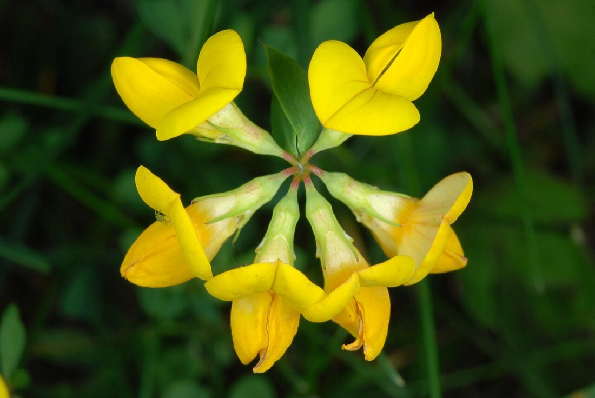

Birdsfoot Trefoil
Lotus corniculatus
- Also called
- Bird's-foot trefoil, Garden bird's-foot-trefoil
- Kind
- herb · Fabaceae
- Native to Vermont
- no
- Legal status
- Not on the Agency of Agriculture quarantine list (effective 2026-06-16; read through a summarizing fetch 2026-10-31; the list's Watch List was not read). (checked 2026-10-31)
- Look-alikes
- Kidney vetch (Anthyllis vulneraria)
Pictures

Names
Birdsfoot trefoil (bird's-foot trefoil; Go Botany's name is garden bird's-foot-trefoil), Lotus corniculatus, in the pea family, Fabaceae.
Range and habitat
Not native: Go Botany says the species is native to Eurasia and records it as present in Vermont; it adds that "It can be an agricultural pest in North America." It lists human-disturbed areas, meadows and fields (the Flora of North America entry adds roadsides, lawns and waste areas) and marks the plant as usually in non-wetlands (FACU). Minnesota Wildflowers gives origin as Europe and lists sun; disturbed soil, fields, lawns, roadsides and gravel pits.
How to identify (by season; look-alikes and the key difference)
- Height: 5 to 40 cm.
- Flowers: yellow or orange, pea-like (two-sided, five petals), 9 to 18 mm long, one to seven on a stalk.
- Leaves: compound and alternate, with five leaflets 4 to 18 mm long and 1 to 10 mm wide and smooth edges, with leaf-base wings (stipules).
- Look-alike (Go Botany): kidney vetch (Anthyllis vulneraria), named without a comparison.
Through the year
Dates are typical for Vermont and shift with elevation and year; "approximate" means the source gave a season and the dates are a translation of it.
| When | What | Look for | What to do | Dates |
|---|---|---|---|---|
| Jun 1 to Aug 31 | flower (identify) | Clusters of one to seven yellow, pea-like flowers held in a ring on a short stalk, over low leaves of five leaflets. | - | approximate |
Role and management
The sources read give no mowing, grazing or control advice for this plant, and no statement about its value to wildlife.
What helps it thrive (light, soil and moisture, and how it is kept)
The sources read give no light, soil or moisture needs for this plant: the USDA Fire Effects Information System page for it could not be fetched (searched 2026-11-01) and no other source was read. What the note records about where it is found is under Range and habitat; ask the county forester or UVM Extension for how to encourage or discourage it.
Legal status
Not on the Agency of Agriculture quarantine list as read on 2026-10-31 (effective 2026-06-16; the list's Watch List was not read). No other legal status was looked up.
Sources
- Native Plant Trust, Go Botany, Lotus corniculatus: https://gobotany.nativeplanttrust.org/species/lotus/corniculatus/ (read through a summarizing fetch 2026-10-31)
- Minnesota Wildflowers, Bird's-foot Trefoil (bloom season, habitat and origin only; a Minnesota page, used here as a stand-in for typical bloom time): https://www.minnesotawildflowers.info/flower/birds-foot-trefoil (read through a summarizing fetch 2026-10-31)
- Vermont Agency of Agriculture, Food and Markets, quarantine list (effective June 16, 2026): https://agriculture.vermont.gov/node/11701 (read through a summarizing fetch 2026-10-31)
What this page is based on
Kind of source: mixed (a regional flora, a Minnesota wildflower guide, the state quarantine list)
What was read: Go Botany species page and the Minnesota Wildflowers page (bloom season, habitat and origin only) each read through a summarizing fetch on 2026-10-31; the Agency of Agriculture quarantine list read the same way. Go Botany does not say how to tell the named look-alike apart. The calendar window translates Minnesota's bloom season into month ends; no Vermont bloom list was read for this plant. Pictures: the Wikimedia Commons description and the photo itself were looked at.
Last checked: 2026-10-31
Vermont land and forest reference, built 2026-11-05. Rules and dates here are summaries, not legal advice; dates shift with elevation and year. Photo and recording credits · Note: _reference/US-VT/Species/Birdsfoot Trefoil.md